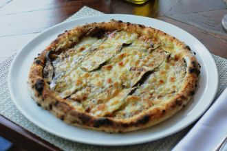

Explore the spectrum of colors!
Hello world, how are you?
Unstyled Paragraph
this is another para
Once upon a time, in a small village, there lived a curious cat named Whiskers. Whiskers loved to explore the world beyond his cozy home. Every day, he would venture into the nearby forest, chasing butterflies and climbing trees. One sunny afternoon, Whiskers stumbled upon a hidden glade filled with colorful flowers and sparkling streams. It was a magical place where he met new friends – a wise old owl, a playful squirrel, and a gentle deer. Together, they embarked on many adventures, discovering the wonders of nature and learning valuable lessons about friendship and kindness. Whiskers realized that the world was full of beauty and excitement, and he couldn't wait to see what new adventures awaited him each day.
